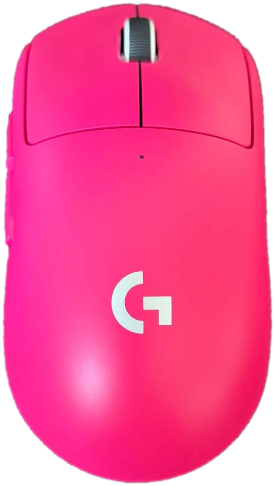

100–44 000DPI
DPI показує, на скільки точок зсувається курсор, коли мишка проходить 1 дюйм (2,54 см). 44 000 — це запас точності. Більшість гравців у шутерах грає на 400–1600 DPI.
Розбираю свою мишку по деталях. Тут є характеристики з коробки і пояснення, що вони означають. А ще калькулятор чутливості й тренажер прицілювання, щоб перевірити себе.

Усі цифри переписані з коробки моєї мишки, з розділу Technical Specifications. Під кожною я пояснюю простими словами, що вона означає.
DPI показує, на скільки точок зсувається курсор, коли мишка проходить 1 дюйм (2,54 см). 44 000 — це запас точності. Більшість гравців у шутерах грає на 400–1600 DPI.
Легша мишка швидше стартує і зупиняється, тож різкі повороти даються легше. Це приблизно вага 12 монет по 5 гривень.
Стільки мишка працює в постійному русі при частоті 1000 Гц. На 8000 Гц заряд закінчиться швидше.
Мишка повідомляє комп'ютеру свою позицію 8000 разів на секунду, тобто кожні 0,125 мс. Через кабель — до 1000 Гц (1 мс). Ця частота має сенс з монітором 240+ Гц і потужним процесором.
IPS означає «дюймів за секунду». 888 IPS — це понад 22 метри за секунду. Рука людини так швидко не рухається, тож сенсор не «загубиться».
Навіть при дуже різкому ривку мишкою курсор не зірветься і не відстане.
Нуль згладжування, прискорення і фільтрації (Zero smoothing). Курсор рухається рівно так, як рука, без «допомоги» від програми.
Довжина × ширина × висота. Форма симетрична, бокові кнопки є тільки зліва.
Мінімум 48% пластику корпусу виготовлено з переробленого. Вуглецевий слід мишки: 8,28 кг CO₂e. Пам'ять вбудована, тож налаштування зберігаються в самій мишці.
Джерело: коробка Logitech G Pro X Superlight 2 (видання 2025 року). Батарею виміряли при 1 кГц, а швидкість — на килимку Logitech G640, так написано на коробці.
Натисни на точку на фото або на пункт у списку. Фото моє, мишка теж.
Наведи курсор на мишку і натискай кнопки своєї мишки або крути колесо. Мишка на екрані повторить кожен рух. На телефоні просто торкайся кнопок.
Обери гру, DPI і чутливість у грі. Калькулятор покаже, скільки сантиметрів треба провести мишкою, щоб персонаж повернувся на 360°.
У тебе 20 секунд. Влучай у мішені якомога швидше: з часом вони стають меншими.
Superlight 2 проти двох попередніх бездротових Pro-мишок Logitech. Розміри в усіх трьох однакові.
| Характеристика | Superlight 2 | Superlight | G Pro Wireless |
|---|---|---|---|
| Вага | 60 г | 63 г | 80 г |
| Сенсор | HERO 2 | HERO 25K | HERO 25K |
| Макс. DPI | 44 000 | 25 600 | 25 600 |
| Опитування (бездрот.) | 8000 Гц | 1000 Гц | 1000 Гц |
| Батарея | 95 год | 70 год | до 60 год |
| Розміри, мм | 125×63,5×40 | 125×63,5×40 | 125×63,5×40 |
| RGB-підсвітка | немає | немає | є |
Таблицю можна гортати вбік.
Дані Superlight 2 взяті з моєї коробки. Дані інших моделей — з офіційних характеристик Logitech, вони можуть відрізнятися залежно від версії та прошивки.